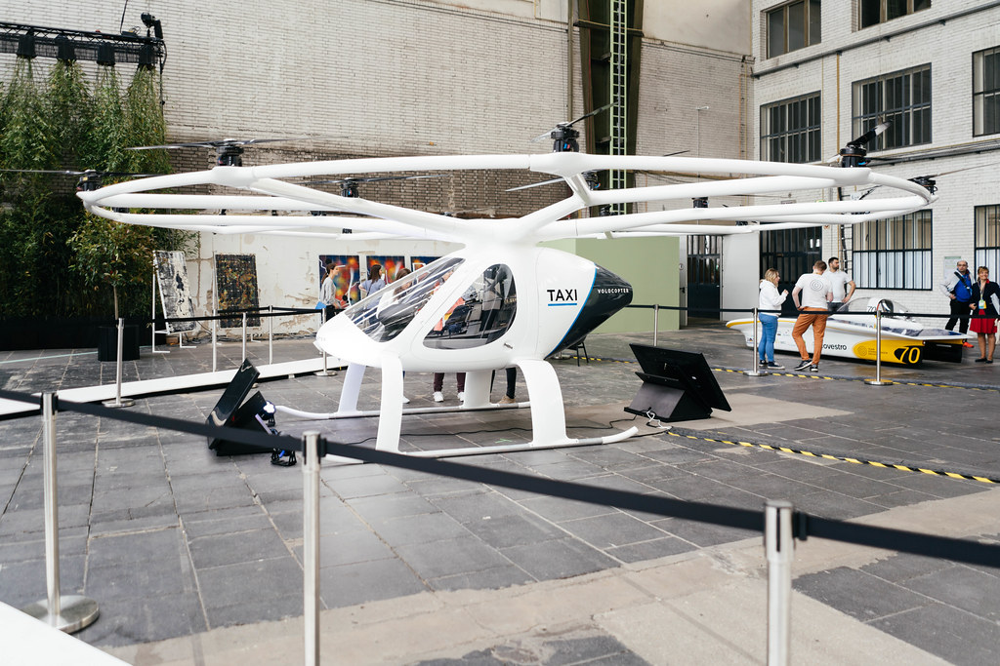
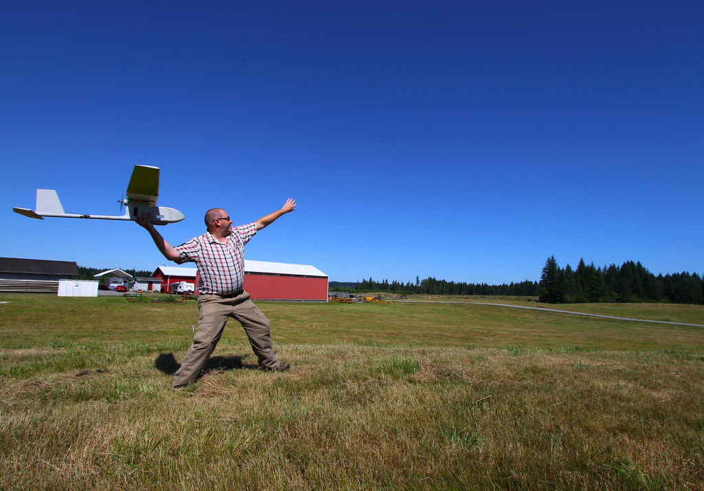
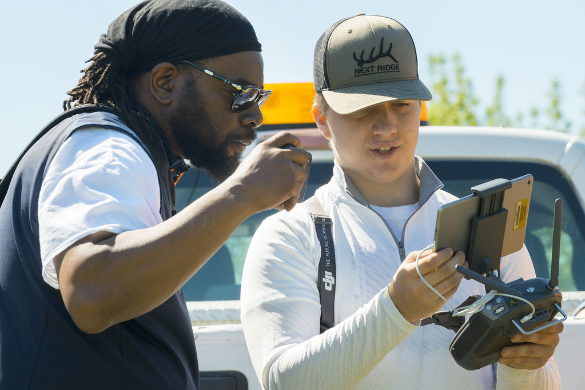

The Volocoper as displayed here in the image is a German aircraft manufacturer that specilized in the process and design of many personal aeronautical vehicles; such as the Volocopter 2X as posted here.

An individual stand out in an open field in Oregon to test out the capabilities of the drone and gather flight data and evidence later on.

Two individuals try and review the schematics and flight data from a drone that has came back in from a recent flight and get the records in.